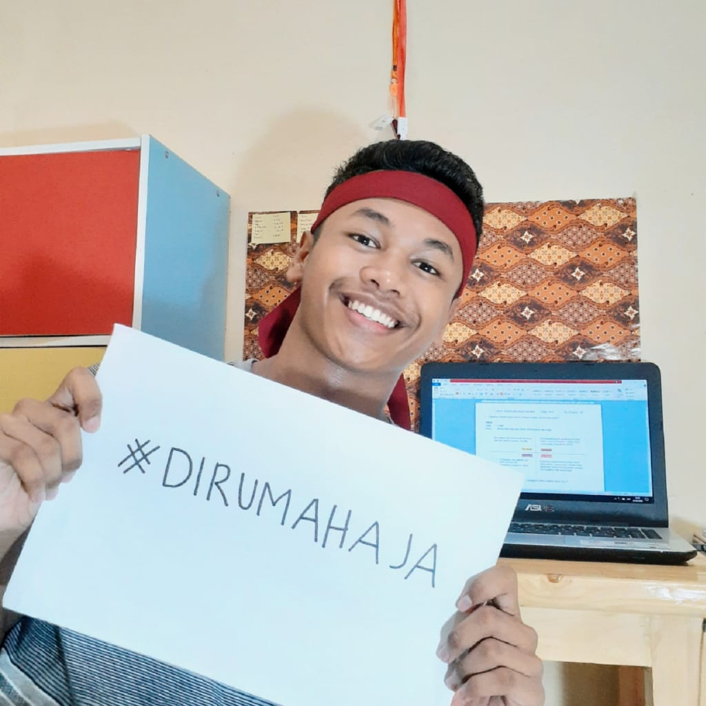

Welcome to my page, peeps!

Biodataku
Nama Lengkap : Muhammad Damar Rukmana
Nama Panggilan : Mamank, Damar, Amai
Tempat Tanggal Lahir : Bogor, 16 Juni 2003
Agama : Islam
Zodiak : Gemini
Golongan Darah : O
Alamat : Jl. Sukamulya RT 03/05, Kelurahan Sukasari
Cita-cita : Pilot, Sastrawan
Hobi : Menulis puisi, Menonton film
Riwayat Pendidikan
- TK Al-Khoeriyah Bogor
- SDN Sukasari Bogor
- SMPN 9 Kota Bogor
- SMK-SMAK Bogor
Cerita Singkat
Namaku Muhammad Damar Rukmana. Biasa dipanggil Damar, Mamang, Amai. Kelahiran Bogor, 16 Juni 2003. Saya adalah anak tunggal. Waktu kecil, saya memiliki cita-cita
ingin menjadi Pilot. Di waktu luang saya memiliki hobi menulis puisi karena saya ingin menjadi Sastrawan di masa depan. Dengan menulis
puisi, kita bisa mengekspresikan perasaan yang tidak bisa diungkapan seutuhnya. Makanan favorite saya adalah brownies coklat lumer, dan minuman
favorite saya adalah es coklat yang memiliki rasa 30% pahit dan 70% manis. Film favorite saya adalah Harry Potter. Saya juga suka menonton drama Thailand, lucu banget.
Dari SD hingga sekarang, saya memiliki hobi baris-berbaris. Saya mengikuti ekstrakurikuler Paskibra sejak SMP hingga
sekarang. Sedari SD, saya suka menjadi pemimpin, khusunya pemimpin upacara. Impian saya adalah saya ingin traveling keliling
dunia bersama orang yang saya cintai. Saya bekerja keras karena saya sadar, bahwa banyak orang yang harus saya perjuangkan.